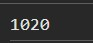
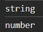
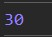
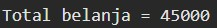
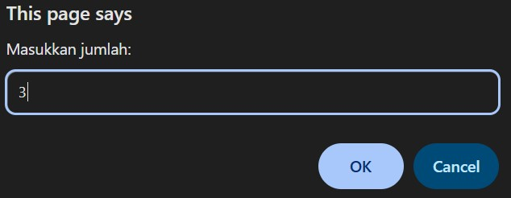
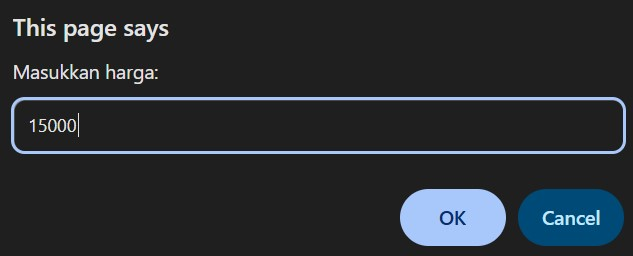
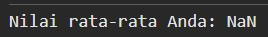
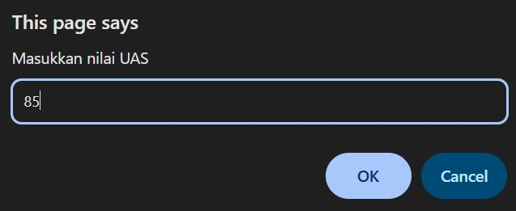
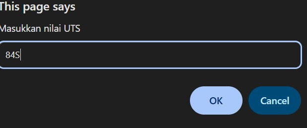

| Satuan Pendidikan | SMKN 1 GARUT | Nama | angga nugraha |
| Mata Pelajaran | Dasar-Dasar PPLG | Kelas / No. Absen | X PPLG 1 / 5 |
| Kelas / Fase | X / Fase E | Tanggal | 18 November 2026 |
| Alokasi Waktu | 2 × 45 menit | ||
A. TUJUAN PEMBELAJARAN
Setelah menyelesaikan LKPD ini, peserta didik mampu: (1) membedakan String dan Number;
(2) menjelaskan bahwa prompt() menghasilkan String; (3) menggunakan Number() dan String();
(4) menganalisis kesalahan akibat tipe data; dan (5) membuat program input dan perhitungan sederhana.
B. PETUNJUK KERJA
- Kerjakan mandiri terlebih dahulu.
- Diskusikan melalui Think Pair Share.
C. AKTIVITAS 1 — EKSPERIMEN 10 + 20
Prediksi hasil sebelum menjalankan kode. Jalankan kode dan amati. Simpan file sebagai lkpd_string_number_nama.js.
let a = "10";
let b = "20";
console.log(a + b);| Pertanyaan | Jawaban Kamu |
|---|---|
| Apa output program? | 1020 |
| Mengapa hasil tersebut terjadi? | Karena nilai "10" dan "20" diapit tanda kutip sehingga dianggap teks (String). Operator + pada String berfungsi menggabungkan teks (concatenation), bukan menjumlahkan angka. |
| Apakah a dan b bertipe Number? | Tidak, variabel a dan b bertipe String. |
1020 karena kedua variabel masih berbentuk String.
AKTIVTAS 1

D. AKTIVITAS 2 — MENEMUKAN TIPE DATA
let nama = "Asep";
let umur = 16;
console.log(typeof nama);
console.log(typeof umur);| Variabel | Prediksi | Hasil typeof | Kesimpulan |
|---|---|---|---|
nama |
string | string |
Nilai "Asep" memakai tanda kutip sehingga terbaca sebagai tipe data String. |
umur |
number | number |
Nilai 16 ditulis langsung berupa angka tanpa kutip sehingga bertipe Number. |
"..." atau '...'), sedangkan Number adalah tipe data angka tanpa tanda kutip yang bisa langsung dipakai untuk operasi matematika.
AKTIVITAS 2

E. AKTIVITAS 3 — KONVERSI STRING MENJADI NUMBER
Perbaiki program agar menghasilkan 30. Gunakan Number():
let a = "10";
let b = "20";
let hasil = Number(a) + Number(b);
console.log(hasil);30 (bertipe Number).
AKTIVITAS 3

F. AKTIVITAS 4 — PROGRAM KASIR SEDERHANA
Buat program yang meminta harga barang dan jumlah barang melalui prompt(), mengubah keduanya menjadi Number, lalu menghitung total harga.
let harga = Number(prompt("Masukkan harga: "));
let jumlah = Number(prompt("Masukkan jumlah: "));
let total = harga * jumlah;
console.log("Total belanja = " + total);| Input Uji | Nilai |
|---|---|
| Harga | Rp 15.000 |
| Jumlah | 3 |
| Total seharusnya | Rp 45.000 |
| Total program | Rp 45.000 (Total belanja = 45000) |
AKTIVITAS 4



G. TANTANGAN — PROGRAM HITUNG NILAI
Buat program dengan input nilai tugas, UTS, dan UAS. Konversikan semua input menggunakan Number(), lalu hitung rata-rata dengan rumus (tugas + UTS + UAS) / 3.
- Minta input nilai tugas, UTS, dan UAS dari pengguna memakai
prompt()lalu langsung ubah ke angka denganNumber(). - Hitung nilai rata-rata dengan menjumlahkan ketiga variabel di dalam kurung lalu dibagi 3:
(tugas + uts + uas) / 3. - Simpan hasil perhitungan ke dalam variabel
rataRata. - Tampilkan hasil rata-rata ke layar menggunakan
console.log().
let tugas = Number(prompt("Masukkan nilai Tugas: "));
let uts = Number(prompt("Masukkan nilai UTS: "));
let uas = Number(prompt("Masukkan nilai UAS: "));
let rataRata = (tugas + uts + uas) / 3;
console.log("Nilai rata-rata = " + rataRata);TANTANGAN



H. THINK PAIR SHARE
| Pertanyaan | Jawaban |
|---|---|
Mengapa prompt() perlu dikonversi jika hasilnya ingin dihitung? |
Karena nilai kembalian prompt() selalu bertipe String. Jika tidak dikonversi ke Number, tanda + akan menggabungkan angka sebagai teks, bukan menjumlahkannya. |
Apa perbedaan "10" dengan 10? |
"10" adalah String (teks berisi karakter 1 dan 0), sedangkan 10 adalah Number (nilai bilangan sepuluh yang bisa dihitung). |
Apa yang terjadi jika lupa Number()? |
Operasi penjumlahan akan keliru karena hanya menempelkan teks (contoh: "80" + "90" menjadi "8090"), sehingga hasil rata-rata atau total belanja menjadi salah. |
Number(prompt(...)) saat input, sedangkan teman saya menampung prompt() dulu baru dikonversi di baris perhitungan.
prompt() otomatis terbaca sebagai String oleh JavaScript, jadi wajib dibungkus Number() sebelum dipakai menghitung rumus matematika.
I. REFLEKSI 3-2-1
- Perbedaan penulisan dan fungsi tipe data String (pakai kutip) dan Number (tanpa kutip).
- Fungsi
typeofuntuk mengecek jenis tipe data pada sebuah variabel. - Cara mengubah String menjadi Number memakai
Number()agar bisa dihitung.
- Hasil yang muncul jika
Number()diisi teks huruf sepertiNumber("halo")(munculNaN). - Perbedaan penggunaan
Number()dibandingkan denganparseInt()atauparseFloat().
Membuat kalkulator diskon belanja sederhana yang mengambil input dari form HTML langsung, bukan cuma dari prompt().
J. PENILAIAN DIRI
| Pernyataan | Ya | Belum |
|---|---|---|
| Saya dapat membedakan String dan Number. | ☑ | ☐ |
Saya memahami prompt() menghasilkan String. |
☑ | ☐ |
Saya dapat menggunakan Number(). |
☑ | ☐ |
Saya dapat menggunakan String(). |
☑ | ☐ |
| Saya dapat menemukan kesalahan tipe data. | ☑ | ☐ |
| Saya dapat membuat program input dan hitung sederhana. | ☑ | ☐ |
K. RUBRIK PENILAIAN PRAKTIK
| Aspek | 4 - Sangat Baik | 3 - Baik | 2 - Cukup | 1 - Perlu Bimbingan |
|---|---|---|---|---|
| Tipe data | Membedakan String/Number dengan tepat. | Tepat dan mandiri. | Masih ada kekeliruan. | Belum memahami. |
| Konversi | Menjelaskan dan memberi contoh dengan tepat. | Benar dengan sedikit arahan. | Beberapa kesalahan. | Belum mampu. |
| Program | Berjalan benar dan rapi. | Sedikit kesalahan. | Berjalan sebagian. | Belum berjalan. |
| Pemecahan masalah | Menemukan dan memperbaiki error mandiri. | Dengan sedikit bantuan. | Dengan banyak bantuan. | Belum mampu. |
Catatan Guru: ________________________________________________________________________